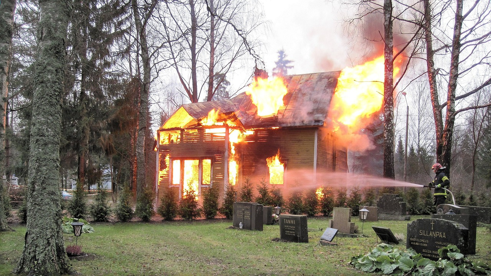

PREVENÇÃO DE ACIDENTES DOMÉSTICOS
Acidentes domésticos podem ser evitados com cuidados simples como manter pisos secos, usar tapetes antiderrapantes, guardar produtos perigosos e evitar deixar objetos espalhados.
- Evite deixar panelas com cabos virados para fora do fogão.
- Desligue os aparelhos da tomada ao sair de casa.
- Mantenha produtos de limpeza fora do alcance das crianças.
- Tenha extintor ou balde de areia para emergências pequenas.
- Faça revisão elétrica periodicamente.
